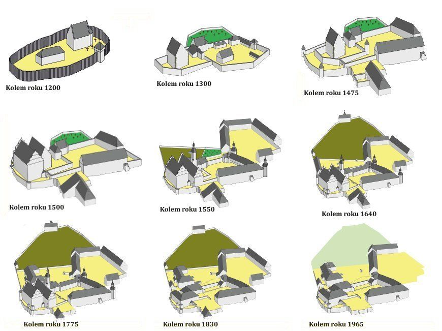
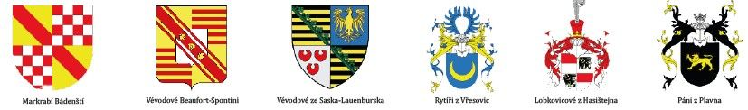
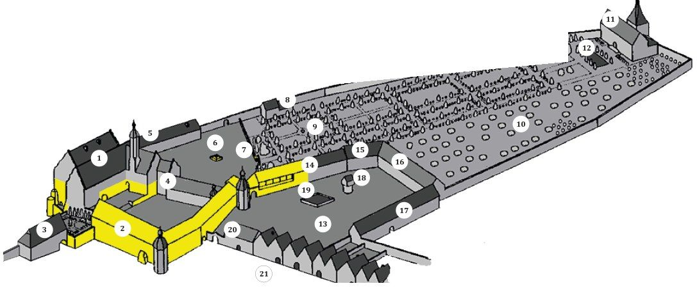
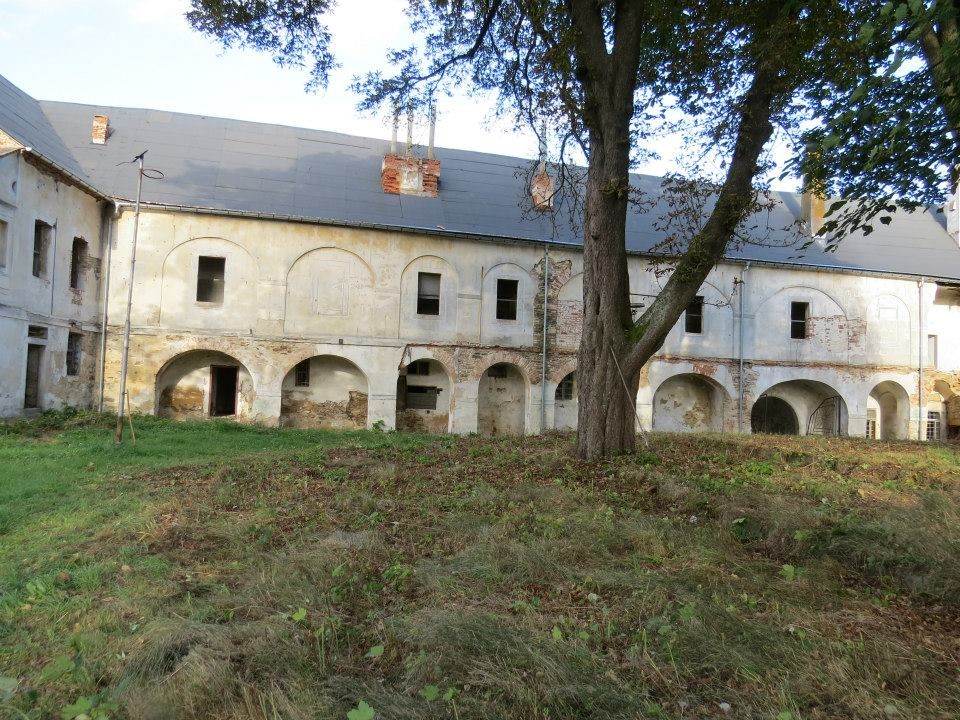
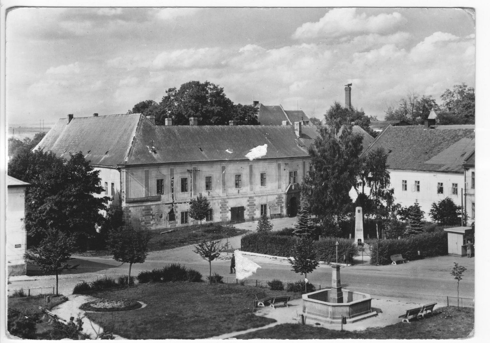
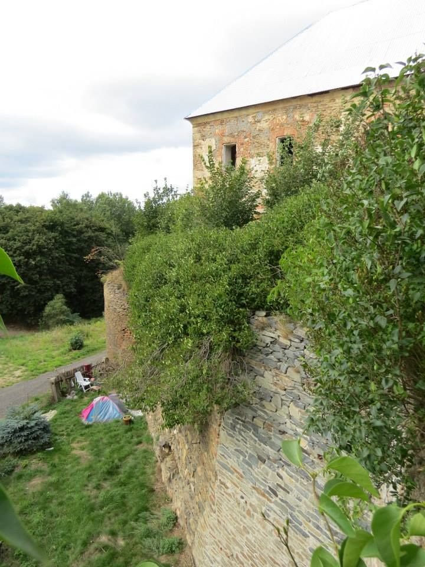
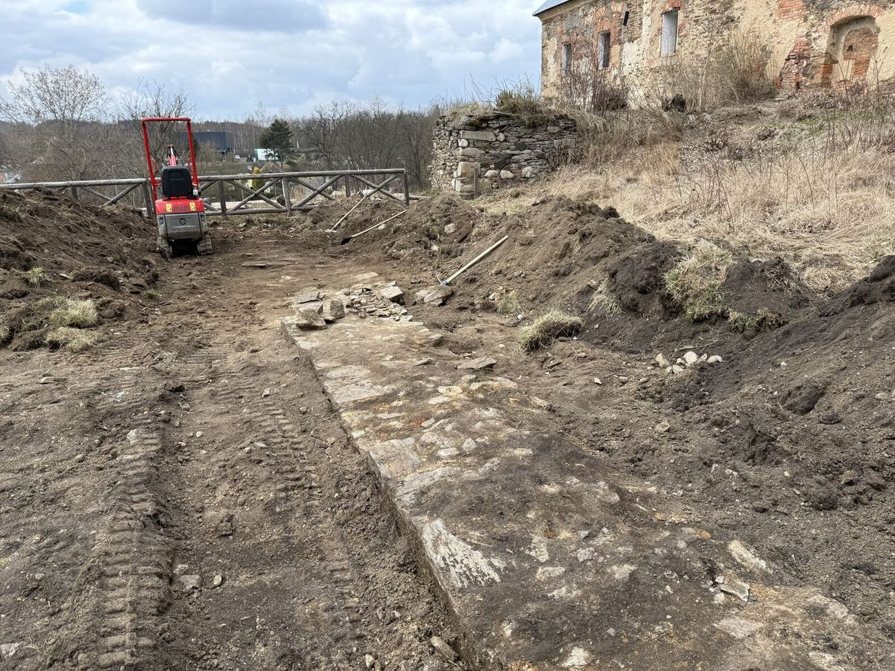
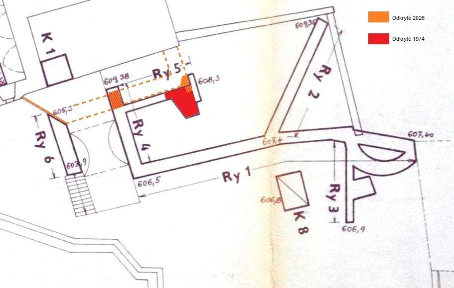
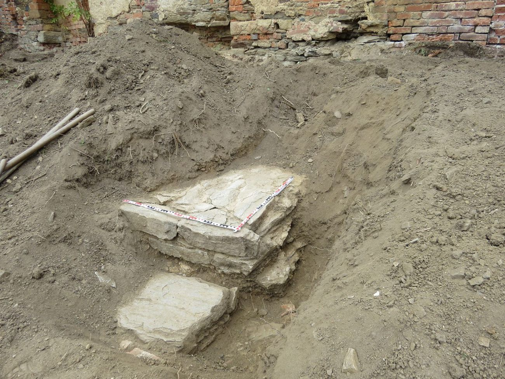

Zámek Toužim
Nejstarší a nejvýznamnější památka Toužimi. Z proboštství hrad, z hradu zámek, pak desítky let chátrání. Od roku 2015 se do něj vrací život.
Zámek Toužim je historický areál v centru Toužimi v Karlovarském kraji. Je kulturní památkou a patří městu1.
Hrad, nebo zámek? Obojí. Starší částí je Horní zámek, kterému se říká Janův hrad, mladší částí Dolní neboli Nový zámek1,2.
Jména a pojmy
- Zámek Toužim
- Celý historický areál.
- Janův hrad, Horní zámek
- Starší část areálu. V Památkovém katalogu vedená jako „Janův zámek, tzv. Horní hrad“5.
- Nový zámek, Dolní zámek
- Mladší renesanční část, průčelím k náměstí6.
- Hradba
- Hlavní obranná zeď kolem hradu nebo města.
- Parkán
- Pás mezi hlavní hradbou a nižší předsunutou zdí.
- Bašta
- Věž nebo výstupek vysunutý z hradby, odkud šlo střílet podél zdi.
- Příkop a val
- Vykopaná rýha a navršená zemina před hradbami.
DějinyDějiny zámku
Od dvorce ve 12. století přes hrad Vřesoviců a renesanční zámek po chátrání a návrat života po roce 2015.
Číst dálSbalit
- 2. pol. 12. stol.Krajinu na horním toku Střely dostává od panovníka velmož Jiří z Milevska. Na místě zámku staví dvorec, pojmenovaný asi po prvním správci Túžimovi („vytoužený syn“).
- 1187Jiří zakládá premonstrátský klášter v Milevsku a odkáže mu i Toužimsko. Premonstráti mění dvorec na proboštství s kostelem sv. Jana Křtitele.
- 1354První písemná zmínka o Toužimi.
- 1394Proboštství vyplenili šlechtici bojující proti králi Václavu IV. a zajali probošta Jiřího.
- 1437Král Zikmund dává panství do zástavy husitskému hejtmanovi Jakoubkovi z Vřesovic. Se synem Janem přestavují proboštství na gotický hrad, dnešní jádro Horního zámku (Janův hrad).
- 1469Král Jiří z Poděbrad povoluje měšťanům vypleněné Útviny postavit u hradu nové opevněné město. Vzniká Toužim.
- kolem 1490Panství získávají páni z Plavna. Přistavují pozdně gotický palác a v 1. polovině 16. století hrad renesančně přestavují: vzniká Horní a Dolní zámek, poplužní dvůr a zahrada s kašnou.
- 1565Panství dědí Lobkovicové z Hasištejna.
- 1620Zámek i město vyhořely. O tři roky později kupuje panství vévoda Julius Jindřich Sasko-Lauenburský a přestavuje zámek na raně barokní sídlo s parkem a letohrádkem. Zaniká kostel sv. Jana Křtitele, na jeho místě stojí kaplička sv. Kříže.
- 1652Další požár. Při obnově vzniká nový panský pivovar.
- 1689Panství dědí bádenská markrabata. Zámek už neslouží jako sídlo šlechty, jen hospodářství a správě.
- 1752Zámek znovu vyhořel. Dolní zámek dostává dnešní pozdně barokní podobu.
- 1789Panství připadá panovníkovi. Část chátrajícího zámku je zbořena.
- 1829Horní zámek přichází o celé horní patro s věží a obě křídla. Zaniká i zahrada s letohrádkem.
- 1837Panství kupuje v dražbě vévoda Alfred Beaufort-Spontin. Rod ho drží až do roku 1945.
- 1945Zámek přechází na stát. Využívá ho armáda, státní statek, okresní národní výbor a později město.
- 1964Kvůli panelovému sídlišti jsou zbořeny některé hospodářské budovy.
- 1989Obnova, připravovaná od 70. let, se úplně zastavuje.
- 1998Město zámek prodává soukromé osobě. Zámek chátrá a ničí ho vandalové.
- 2009Město Toužim získává zámek zpět jako ruinu.
- 2015První dobrovolnická brigáda na nádvoří.
- 2016Vzniká spolek Živý zámek Toužim.
- 2026Objev hradební zdi z 15. století.
Jak se zámek stavěl a měnil (1200–1965)

Majitelé a jejich erby

- do 1437
- premonstráti z Milevska
- 1437–kolem 1490
- Vřesovicové (zástava)
- kolem 1490–1565
- páni z Plavna, od 1538 dědičně
- 1565–1623
- Lobkovicové z Hasištejna
- 1623–1689
- vévodové Sasko-Lauenburští
- 1689–1789
- bádenská markrabata
- 1789–1837
- panovník (královská komora)
- 1837–1945
- Beaufort-Spontinové
- od 1945
- stát, později město Toužim (1998–2009 soukromý majitel)
AreálHorní a Dolní zámek
Z rozsáhlého panského sídla se dochovalo hlavně jádro: Horní a Dolní zámek, panský pivovar, kašna, kaplička sv. Kříže a část poplužního dvora. Na kresbě jsou žlutě zvýrazněné dochované části.
Číst dálSbalit
Jak zámek vypadal kolem roku 1700

- Horní zámek (Janův hrad), rezidence
- Dolní zámek, úřední dům
- Dolní městská brána s masnými krámy a zámeckou zbrojnicí
- Jízdárna
- Panská sladovna a pivovar
- Kašna
- Kaplička sv. Kříže
- Dům zahradníka
- Zámecká zahrada
- Zámecký sad
- Letohrádek (lusthaus)
- Vodní nádrž s vodotrysky
- Nádvoří poplužního dvora
- Čeledník s chlévy
- Sýpka
- Stodola
- Stáje
- Holubník
- Vodní nádrž
- Dům hejtmana, správce poplužního dvora
- Tržiště (náměstí) s měšťanskými domy
Pivovar, kašna a kaplička
Panský pivovar stál v zahradě nejpozději od roku 1661, dochoval se jeho sklep. Dnešní budova pivovaru je barokní novostavba z doby po roce 1752. Před ní stojí kamenná kašna ze zámecké zahrady. Kaplička sv. Kříže nahradila proboštský kostel sv. Jana Křtitele.
Zámecká zahrada
Byla založena severně od zámku snad už před rokem 1620 a po roce 1625 výrazně rozšířena. Francouzský park s vodními nádržemi, vodotrysky, sadem, domem zahradníka a renesančním letohrádkem obklopovala kamenná zeď. V 19. století zahrada zanikla, dnes je většina její plochy zastavěná sídlištěm.
Poplužní dvůr
Založen před rokem 1544 severovýchodně od zámku. Kromě hospodářství sloužil i obraně: tříkřídlý komplex u hradební zdi tvořil mohutnou baštu se střílnami. Patřil k němu čeledník, chlévy, sýpka, stodola, stáje, kočárovna, hejtmanství a holubník. Východním křídlem vedla Židovská brána do ghetta na Předměstí.
Dolní brána, rybník a mlýn
Dolní neboli Rybářská brána měla v 17. století v patře zámeckou zbrojnici, zbořena byla v roce 1847. Zámecký rybník v údolí Střely byl součástí opevnění města a zanikl po povodni na konci 19. století. Dochovala se hráz se splavem a kamenným dvouobloukovým můstkem. Zámecký mlýn zanikl po roce 1960.
Janův hrad
Horní zámek je nejstarší částí areálu. Ukrývá románsko-gotické torzo proboštství, obytnou věž hradu a pozdně gotický palác, který byl kolem roku 1544 renesančně rozšířen2. Jméno nese po Janovi z Vřesovic, který tu nechal postavit pevný hrad7. Na přímluvu Jana II. z Vřesovic, zástavního majitele hradu, pak král Jiří z Poděbrad v roce 1469 povolil založit u hradu nové město3.
Hrad vznikl po roce 1437 přestavbou obytné stavby proboštství. Na západní a jižní straně se z něj dochovaly hradby s válcovou baštou a vstupní brána. Renesanční přestavba z něj udělala honosný zámek, který pak znovu upravovali po požárech v letech 1620, 1652 a 1752.
Na počátku 19. století, kdy už zámek nesloužil šlechtě, ale hospodářství, se horní patro včetně věže sneslo a zbořilo se i jižní křídlo. Část zámku pak sloužila jako panské kanceláře a byty toužimských měšťanů4.
Památkový katalog ho vede jako „Janův zámek, tzv. Horní hrad“5. Pozor na záměnu: Janův hrad stojí i u Lednice. Ten je ale o několik století mladší, stavět se začal v roce 1801 jako lovecký zámeček Lichtenštejnů9. Kdo hledá ten toužimský, ať přidá „Toužim“.
Dolní neboli Nový zámek
„Nový“ neznamená nedávný. Jméno ho jen odlišuje od staršího Janova hradu. Vznikl renesanční přestavbou gotického předhradí. Portál je datovaný rokem 1544, další úpravy přišly v letech 1576–1578 a po požárech v 17. století2. Hlavní průčelí obrací k náměstí6.
Na dvoře má pilířové arkády, v patře později zazděné. Když se podíváte pozorně, tvar oblouků je ve zdi pořád vidět6. Severní křídlo, zbořené v 19. století, kdysi propojovalo oba zámky2. Zůstala z něj jen jízdárna.
Dolní zámek sloužil správě panství. Po požárech v 17. století v něm vznikl malovaný trámový strop, dnešní podobu má z pozdně barokních úprav po roce 1752. Ve sklepení byla cisterna na vodu. Na nádvoří stojí sokl sloupu sv. Jana Nepomuckého z roku 1800.


ObranaHradby a archeologie
Hradby hradu a dnešního zámku postupně odkrýváme od roku 2026 při zakládání zámecké zahrady. Průzkum pokračuje a článek budeme doplňovat.
Číst dálSbalit

Archeologický průzkum 2026
Při zakládání zámecké zahrady jsme v roce 2026 odkryli dvě různé hradební zdi.
Zeď z jara 2026
V březnu jsme pod hlínou narazili na původní hradební zeď, pravděpodobně z počátku 15. století. V dubnu ji archeologové prozkoumali a zdokumentovali. Aby zůstala chráněná, znovu ji zasypeme a u nálezu umístíme informační tabuli s fotkami z průzkumu.

Horní hradební zeď
V říjnu jsme odkryli část horní hradební zdi. Jde o jinou zeď než nález z března. Kus téže zdi odkryl už archeologický průzkum v roce 1974. Na konci října ji místní historik zaměřil a výkop rozšířil o další úsek.


PověstiPověsti o zámku
Tři příběhy: o chamtivém proboštovi Dluhošovi, který jako černý mnich bloudí podzemím, a o dvou děsivých hostech v zámeckém sále.
Číst dálSbalit
Černý mnich
Kdysi dávno, v době přemyslovských králů, spravoval toužimský klášterní statek probošt Dluhoš. Byl velice schopný, ale také velmi chamtivý. Na úkor poddaných i kláštera se obohacoval a nastřádané jmění schovával ve sklepení svého domu. O Dluhošově konání se dozvěděl sám opat. Přijel s bratry kanovníky do Toužimi probošta vyslechnout, ten se bohatství nechtěl vzdát a své činy dál popíral. Za trest Dluhoše oblékli do černého roucha a jako „černou ovci“ řádu jej, i s nakradeným pokladem, zazdili v podzemí proboštství.
Z klášterního statku se stal hrad, z hradu zámek. V podzemí napříč staletími bloudí duše „černého mnicha“, jehož vysvobodí až člověk čistých úmyslů, který Dluhošův poklad najde a věnuje potřebným.
Nezvaný host
Na plese na zámku odmítla dáma opilého pána slovy: „Raději bych tancovala s čertem!“ Pak s ní tančil neznámý host a krátce po půlnoci odešel. Teprve tehdy si všichni všimli, že má místo jedné nohy kopyto8.
Pámbůsnámi na zámku
Po půlnoci se v zámeckém sále objevila děsivá postava a bouchala kopyty do podlahy. Hosté utekli a parket se propadl. Co se tam doopravdy stalo, se neví. Pověst zapsal Josef Russ v roce 1936 pod názvem „Der Gottseibeiuns im Schlosse zu Theussing“8.
SoučasnostZámek dnes
V roce 2011 byly obě zámecké budovy nestabilní zříceniny. Silný vítr tehdy strhl část střechy Horního zámku a z Dolního zámku zloději kradli měděnou krytinu2.
Číst dálSbalit
Jak se zámek znovu otevřel
V letech 2014 a 2015 zkoumal Mikuláš Tichý toužimské komunity a lidé mu opakovaně říkali, že je zámek „černá díra“ uprostřed města. Inspirací mu byla obnova Skoků, za kterou stojí Jiří Schierl. V červnu 2015 se na komunitním setkání sešlo asi 60 lidí a ještě to léto začaly brigády na nádvoří. Z této iniciativy vznikl spolek Živý zámek Toužim, zapsaný 28. ledna 2016. Deset let ho jako předseda vedl Michal Nedvídek, od července 2026 je předsedkyní Pavla Vokurková.
Zámek patří městu a nádvoří otvíráme lidem s jeho souhlasem. Podmínkou bylo zatarasit vchody do nebezpečných budov, takže jsme na prvních brigádách stavěli plot a zábrany, čistili nádvoří od náletů a spravovali lavičky a stoly. V létě 2016 byly poprvé otevřené víkendy s prohlídkou nádvoří.
Co se od té doby udělalo
Většinu práce odvedli dobrovolníci na brigádách, s pomocí města a dárců. Na konci srpna 2019 jsme za devět dní postavili zastřešení pódia. Zámecká komnata dostala v roce 2019 novou podlahu a dnes jsou v ní informační panely, obrazy a osvětlení. V roce 2020 jsme zprovoznili první komnatu v hradu.
S městem vzniklo zábradlí na baště nad Karlovarskou ulicí (2021) a toalety s tekoucí vodou (2024). Pro rozbitá okna vznikly v roce 2023 s Infocentrem a základní školou malované desky. V roce 2024 udělal Archeologický ústav AV ČR geofyzikální průzkum nádvoří a pivovaru.
Od jara 2026 zakládáme zámeckou zahradu. Při práci jsme narazili na středověké zdivo, víc je v článku Hradby a archeologie.
Opravy budov
Opravy budov se zatím týkají hlavně pivovaru a Janova hradu. Pivovar má novou střechu, fasády a okna. Na Janově hradu se zpevnila koruna zdí, vyzdily se propadlé klenby, šachta točitého schodiště a štíty a obnovený krov má zatím provizorní plechovou střechu. Dolní zámek dál chátrá. Má provizorní střechu a na nárožích statické poruchy. Národní památkový ústav proto areál vede mezi ohroženými památkami1.
Akce během roku
Sezóna začíná 30. dubna pálením čarodějnic a stavěním máje se SDH Toužim. Na jaře a na podzim je Zámecké CITO, brigáda s geocachery. Dál přichází Dětský den, rockový Festival na zámku, Historický den k výročí povýšení Toužimi na město, Zámecký jarmark, Punkovice a Divadlo na zámku. Od roku 2025 se zámek zapojuje do Hradozámecké noci Národního památkového ústavu. Rok končí Halloweenem a Vánočním setkáním, které se poprvé konalo už v prosinci 2015. Aktuální termíny jsou v Programu.
Pomáhá nám město Toužim, Technické služby města Toužim, dobrovolní hasiči (SDH Toužim), Lesy ČR, Dílna U mnicha, geocacheři a řada dalších lidí. Zahradu podpořila Nadace Via.
Kdy a jak se na zámek podívat, najdete na stránce Navštivte nás. Jak se záchranou pomoct, je na stránce Podpořte nás.
MěstoPamátky Toužimi
Historické jádro Toužimi je od roku 1992 památkovou zónou3. Kromě zámku v něm stojí radnice, kašna, morový sloup, děkanský kostel a měšťanské domy, které mají často gotické sklepy.
Číst dálSbalit
Hradby a brány města
Hrad tu byl dřív než město. Toužim vznikla v roce 1469 jako nové opevněné město přímo u hradu a obě opevnění na sebe navazovala3.
Na jižní a západní straně chránila město kromě hradeb i krajina: svah a podmáčená niva Střely, kterou záhy zaplavil Zámecký rybník. Na opačných stranách, otevřených do mírně stoupajícího terénu, stála za hradbou ještě parkánová zeď a před ní příkop se zemním valem. Nároží hlídaly bašty nebo věže3.
Do města se vcházelo třemi branami. Horní měla městskou věž, Kostelní byla věžovitá. Nejzajímavější byla Dolní brána u opevnění hradu, podobná Bechyňské bráně v Táboře: měla patro se střílnami a průjezd chráněný předbraním3.
Od západu, odkud přišla zkáza Útviny, se šlo po koruně hráze Zámeckého rybníka. Cesta se na ní lomila, přerušoval ji úzký můstek přes splav a pak vedla zpět podél břehu k bráně. Kdo přicházel, byl celou dobu na dostřel ze střílen hradu i Dolní brány3.
Co zbylo z hradeb a bran
Dolní bráně se říkalo také Rybářská nebo Loketská, Horní bráně Plzeňská. Čtvrtou, malou Židovskou neboli Dvorskou branou se chodilo přes panský dvůr na severní předměstí16.
Žádná z bran se nedochovala. Rybářskou a Horní bránu zbořili po požáru města v roce 1847, protože překážely nové císařské silnici z Plzně do Lokte. Kostelní brána při stejném požáru přišla o patro. Nové hrázděné patro pak sloužilo jako synagoga, a když v roce 1872 hořelo znovu, zbořili bránu celou. Židovská brána zanikla s asanací panského dvora v 60. letech 20. století16.
Z hradeb zůstal souvislý pás na západní a jižní straně města, místy až pět metrů vysoký. Dnes často drží zahrady a dvory nebo slouží jako základ domů. Další kusy stojí za kostelem, ve dvorech domů čp. 56 až 58 a v zahradách na severní straně náměstí. V Karlovarské ulici u čp. 344 jsou vidět zbytky základů u Rybářské brány. Na příkop dodnes upomíná starý název části ulice Pod Brankou: Na Příkopu16.
Náměstí: radnice, kašna a morový sloup
Radnice čp. 35 je pozdně gotická, nejspíš z 2. poloviny 15. století17. Po požárech v letech 1620, 1652, 1752 a 1872 ji vždy přestavěli. Kamenná znaková deska nad vchodem zbyla z portálu z doby po roce 1500. V přízemí jsou klenuté síně a černá kuchyně. Ve sklepě se dochovala temnice a vzácně i zbytek dřevěného bednění, na kterém se stavěla klenba. V roce 2004 dostala radnice zpátky klasicistně-empírovou podobu2,17.
Kašnu na náměstí napájel městský vodovod, dřevěným potrubím z Rourového rybníka2. Žulová nádrž měří asi 3,9 × 3,9 metru. Uprostřed původně stál sloup se dvěma kulovitými mísami. Kolem roku 1930 ho nahradil dnešní tři metry vysoký pískovcový pylon od místního sochaře Karla Fuchse. Zdobí ho kruhové reliéfy květů a voda teče otvory ve dvou z nich2,20.
Morový sloup se sochou Panny Marie je z roku 1705, letopočet je vytesaný na podstavci. Panna Marie má korunu a žezlo a na pravé ruce drží Ježíška s jablkem s pozlaceným křížkem. Hlavici sloupu zdobí okřídlené hlavičky andílků19. Sochy svatých Josefa, Floriána, Jana Nepomuckého a Jana Křtitele v rozích jsou zřejmě o něco mladší. Na železných konzolách podstavců kdysi visely lucerny2.
Kostel Narození Panny Marie
Kostel založili asi po roce 1488. Z gotické stavby zbyla severní věž. V letech 1738–1742 ho barokně přestavěl stavitel Johann Schmied z Útviny a po požárech v letech 1774–1778 a 1872 ho znovu obnovili. Uvnitř jsou nástěnné malby J. J. Kramolína z roku 1778: malované hlavní a dva boční oltáře2. Severní kapli Ecce Homo postavil už v roce 1699 J. Socka, jižní kaple přibyla podle návrhu H. A. Biedtermanna18.
K areálu kostela patří ohradní zeď se dvěma branami18. Stojí u něj stará fara čp. 64/65, škola čp. 8 a bývalá márnice, dnes kaple Olivetské hory2. Děkanství čp. 19 postavili barokně ve stejných letech jako kostel, na místě středověké fary12.
Měšťanské domy a starý pivovar
Steinbachův dům čp. 51 stojí v Plzeňské ulici, která vedla z náměstí k Horní bráně. Má pozdně gotické kamenné jádro. Jméno má po Antonínu Steinbachovi z Kranichsteinu, vrchním hejtmanovi sasko-lauenburských panství, kterému patřil ve 2. polovině 17. století. Ve starší listině se mu říká „Velký zelený“ nebo „Velká zeleň“. Po požárech v letech 1485, 1620, 1652, 1752 a 1847 ho vždy přestavěli. Jeho renesanční portál s erbem, Steinbachovým monogramem a letopočtem 1657 odvezli v roce 1907 na zámek v Bečově a v roce 1927 na hrad Loket10.
Nárožní panský dům čp. 53 v téže ulici stál už před rokem 1661. Po požáru roku 1847 z něj vznikl dům pro panské úředníky. Na fasádu tehdy přenesli ze zbořené Horní brány hodiny a erbovní desku z roku 1661 se znaky saského vévody Julia Jindřicha a jeho manželky Anny Magdaleny z Lobkovic. Hodinový stroj zničil požár domu v roce 1896, erb restaurovali v roce 200411,16.
Dům čp. 43 na náměstí má kamenný renesanční portál, který sem v roce 1907 přenesli z domu čp. 50. V klenáku je letopočet 1600, monogram G.S.S. a znamení cechu sladovníků s chmelovými lístky2,22.
Dům čp. 58 si jako jediný v Toužimi zachoval původní dispozici širokého měšťanského domu: vstupní síň neboli mázhaus, síň s renesančním portálkem a černou kuchyni2.
Domy čp. 56 a 57 mají gotický sklep a v přízemí síň s renesanční klenbou s hřebínky. Dům čp. 98, kdysi součást radnice, má v přízemí renesanční klenbu2.
V bývalém panském zájezdním hostinci čp. 7 zůstaly tři nástěnné malby z roku 1932 se starou i tehdejší Toužimí. Při demolici domu čp. 102 se našla kamenná dlažba, základy pece a keramika a sklo ze 16. až 18. století2.
Starý obecní pivovar čp. 69 má pod zemí rozsáhlé pivovarské sklepy s vodními cisternami z 15. století2.
Mimo náměstí
Druhá toužimská kašna stojí v areálu zámku, v bývalé zámecké zahradě před pivovarem mezi čtyřmi stromy. Na stejném místě ji zachycuje mapa z roku 1841 a čtvercovou kašnu má už plán zámeckého pivovaru z 2. poloviny 17. století. Kámen uprostřed nese stopy po části, která se nedochovala21.
Pod zámkem se dochoval zbytek barokního kamenného mostku ze 17. století se dvěma klenutými oblouky. Dnes slouží jako sklep sousední zahrady14.
Kaplička svaté Anny, německy Radinger-Kapelle, je drobná barokní stavba z 18. století, jen asi 2,5 metru široká. Klenbu uvnitř má vymalovanou jako noční nebe s hvězdami a pod omítkou se skrývá nápis „Renoviert 1922“15.
Na Plzeňském předměstí stojí škola čp. 330 z roku 1923 od karlovarského architekta Karla Ernstbergera, žáka Otto Wagnera. Každá strana budovy má jinou fasádu. V nikách jsou reliéfy učících se dětí a na východním štítu postavy muže a ženy, které představují vzdělanost a moudrost. Výzdobu udělal pravděpodobně Willi Russ z Krásna. Budova dodnes slouží jako škola13.
Zajímavosti o zámku
- Město pojmenované po hraduKdyž král v roce 1469 dovolil měšťanům z Útviny postavit nové město, dostalo jméno po hradu: Toužim.
- Znak po ÚtviněNová Toužim převzala práva vypálené Útviny i její městský znak. Nový znak dostala v roce 1478.
- Město podle plánuToužim se stavěla „na zeleném drnu“. Proto má pravoúhlé ulice a náměstí trochu mimo střed.
- Kostel proti hraduV opačném rohu města než hrad stál farní kostel s obrannou věží.
- Panství za 468 100 zlatýchTolik v roce 1837 zaplatil v dražbě vévoda Alfred Beaufort-Spontini, belgický šlechtic, který do Čech přišel před Napoleonem.
- Pivovar jako továrnaV 19. století byl zámecký pivovar spolu s cihelnou a pilou jediným „průmyslovým“ podnikem ve městě. V roce 1901 ho modernizovali.
- Strop v úkrytuMalovaný trámový strop Dolního zámku je kvůli ochraně uložený mimo areál.
- Barokní zázemíHospodářské budovy zámku jsou v podstatě barokní, v 19. století je jen upravovali.
- Z vojáka rytířemAntonín Steinbach (1615–1674) za třicetileté války spravoval toužimské panství a zbohatl. Koupil Líšťany a v roce 1664 se stal rytířem „z Kranichsteinu“. Připomíná ho dům čp. 51. Víc o něm: obec Líšťany, Wikipedie (německy).
- Lokomotiva po silniciPrvní lokomotiva přijela do Toužimi 14. června 1898 po silnici, na voze taženém osmi páry koní. Aby trať vedla přes město, dali na ni Toužimští 200 000 zlatých.
- Konec zámeckého pivaVařit se v pivovaru přestalo brzy po první světové válce. Pivo se tu pak už jen stáčelo, až do konce druhé světové války, kdy pivovar vyhořel.
- Nejstarší krov ve městěPrůzkumy na zámku našly barokní krov. Je to nejstarší dochovaný krov v Toužimi.
Zdroje (22)
- Národní památkový ústav, Ohrožené památky: Toužim, areál zámku
- Toužimské noviny 6/2011: Stručný průvodce městskou památkovou zónou
- Toužimské noviny 5/2011: Jak vzniklo naše město Toužim
- Město Toužim: Toužim 19. a počátku 20. století
- Památkový katalog NPÚ: Janův zámek, tzv. Horní hrad
- Památkový katalog NPÚ: Nový zámek
- Památky a příroda Karlovarska: Toužim – hrad a zámek
- Cesta za pověstí, projekt žáků ZŠ Toužim: Pověsti a legendy Toužimska
- Národní památkový ústav, Janův hrad (Lednice): Historie
- Památkový katalog NPÚ: Měšťanský dům Steinbachův
- Památkový katalog NPÚ: Panský dům
- Památkový katalog NPÚ: Děkanství
- Památkový katalog NPÚ: Škola
- Památkový katalog NPÚ: Silniční most – mostek
- Památkový katalog NPÚ: Kaplička sv. Anny, tzv. Radyňská
- Památkový katalog NPÚ: Městské opevnění
- Památkový katalog NPÚ: Radnice
- Památkový katalog NPÚ: Kostel Narození Panny Marie
- Památkový katalog NPÚ: Sloup se sochou Panny Marie
- Památkový katalog NPÚ: Kašna (náměstí)
- Památkový katalog NPÚ: Kašna (areál zámku)
- Památkový katalog NPÚ: Měšťanský dům čp. 43
Ostatní texty a kresby podle brožury a turistických cedulí spolku z roku 2021. Zdroje ověřeny 28. 10. 2026.